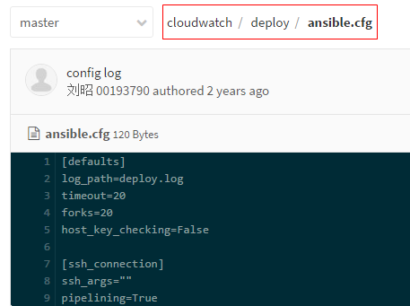
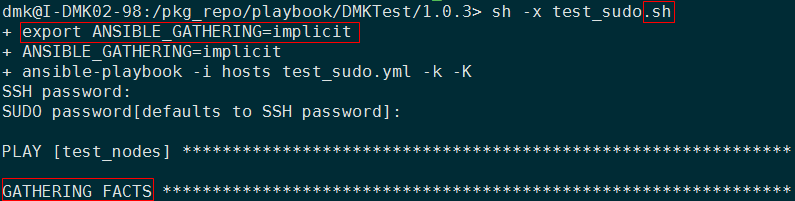

根据DMK的使用场景和用户，DMK 2.1.2版本，对ansible配置的进行了如下修改，优化和加快部署过程。
/etc/ansible/ansible.cfg修改内容包含defaults和ssh_connection相关项，如下：
[defaults]
forks = 20
# implicit - gather by default, turn off with gather_facts: False
# explicit - do not gather by default, must say gather_facts: True
gathering = explicit
host_key_checking = False
timeout = 60
[ssh_connection]
ssh_args = -o ControlMaster=auto -o ControlPersist=120s
pipelining = True
scp_if_ssh = True
修改的配置项说明
forks，设置与hosts主机通信的并行进程数。默认为5，现提升为20
gathering，设置facts收集（主机系统变量）。
- 默认'implicit'，每一次play，facts都会被收集，除非设置'gather_facts: False'.
- 选项'explicit'正好相反，facts不会被收集，除非设置'gather_facts: True'.
- 根据DMK使用的大部分场景，可以根据需求收集fact，这个节省的gather fact时间还是很可观的。
host_key_checking，检测主机秘钥。
- 这一项若使用默认，则与DMK未连接过的机器需要确认公钥，即添加此机器至knowhosts，一般大家都会直接敲yes。
- 为了减少不必要的操作和错误，此项设置为False，
将自动添加。
timeout，默认SSH连接尝试的超时时间。默认是10s，为了降低网络问题引起的错误，增加到60s。
- ssh_args，传递给ansible进行ssh连接使用的参数。
- 加大ControlPersist的值为120s（2分钟），可以减少一次部署多次SSH认证的窘境，节省了每次验证和创建连接的时间，在网络状况不是特别理想，尤其是网段的情况下，所带来的性能提升是非常可观的效果很明显。
pipelining，使用pipelining，Ansible 将会降低通过 wire 传输文件的总量来提升有效率，几乎在所有的情况下优于加速模式。官网推荐：开启这个设置,将显著提高性能。
scp_if_ssh，使用scp替代sftp，因为scp会更快点，这块网上资料挺多。
第一种，服务组自己定义ansible配置文件
基于以上配置修改可以达到比较好的性能
把上面配置修改扔到部署脚本下面，比如： 
根据要求修改，要开启gathering则设置为implicit
第二种，服务组不需要在自身部署脚本下面放配置文件
默认就是用来DMK优化的配置文件了
服务组需要收集使用主机的facts，比如：hostvars，groupvars。
DMK优化配置后，默认关闭收集host节点“Facts”，也就是不运行setup模块。
为了使这一项（gather_facts）生效，有2种办法：
A. 某个playbook中多处用到
在执行的shell脚本里导入环境变量：export ANSIBLE_GATHERING=implicit
dmk@I-DMK02-98:/pkg_repo/playbook/DMKTest/1.0.3> cat test_sudo.sh
#!/bin/bash
export ANSIBLE_GATHERING=implicit
ansible-playbook -i hosts test_sudo.yml -k -K

B. 仅仅某个role中用到
在涉及到的roles设置参数：gather_facts: yes
dmk@I-DMK02-98:/pkg_repo/playbook/DMKTest/1.0.4> cat test_sudo.yml
---
- hosts: test_sudo
remote_user: "{{ssh_user_by_sudo}}"
gather_facts: yes
roles:
- test_sudo
- hosts: test_su
remote_user: "{{ssh_user_by_su}}"
roles:
- test_su